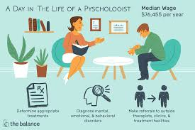

Psychology is the scientific study of the mind and behavior. Psychology is a multifaceted discipline and includes many sub-fields of study such as human development, sports, health, clinical, social behavior and cognitive processes.
Counseling psychologist- They help people cope with problems through various life stages. They listen to the patients’ concerns counseling psychologists instruct them on techniques they can utilize to solve problems, manage stress, adjust to life changes, live normal lives, and improve relationships. Before this can be done, counseling psychologists conduct evaluations by administering various tests and asking numerous questions.Many people meet with counseling psychologists for just a few months or many years.
This job is primarily concerned with applied psychology research. Applied psychology research refers to scientific study and research that seeks to solve practical problems. It is used to find solutions to everyday problems. Applied psychologists start by identifying a problem that exists in the real world and then conducts research in order to find a solution. One example is Investigating which treatment approach is the most effective for reducing anxiety.
On a daily basis, Counseling Psychologists collect information about individuals or clients, using interviews, case histories, observational techniques, and other assessment methods. They develop therapeutic and treatment plans based on clients’ interests, abilities, and needs. Besides the “typical day” things that Counseling Psychologists do, they evaluate the results of counseling methods to determine the reliability and validity of treatments.They might also refer clients to specialists or to other institutions for noncounseling treatment of problems.
In a typical work week as a counseling psychologist, you can expect to work 40 hours per week. Psychologists in private practice often set their own hours, and many work part time as independent consultants. They may work evenings or weekends to accommodate clients. Those employed in hospitals or other healthcare facilities may also have evening or weekend shifts. Most psychologists in clinics, government, industry, or schools work full-time schedules during regular business hours.
Those interested in counseling psychology careers will usually start by earning a four-year bachelor’s degree in order to start their careers, however, advanced degrees are usually necessary. A number of universities offer master's and Doctoral degrees in counseling psychology. In addition to learning the fundamentals of psychology and research methods, future counseling psychologists will also often learn about different therapy and counseling techniques.
Mental Health Counselor- Together with other mental health specialists, such as psychiatrists, psychologists, social workers, and school counselors, mental health counselors help individuals and groups deal with a variety of issues, including addiction, substance abuse, suicidal tendencies, aging issues, job stress, and self-esteem issues.
The median annual wage for psychologists was $79,010 in May 2018.
School Counselor- At every level of our education system, school counselors perform a variety of different functions. In an elementary school, a counselor might work with teachers and parents to evaluate a student's strengths, weaknesses, and special needs. High school counselors, sometimes called guidance counselors, assist students with various issues common to teenagers. They may advise students about anything from self-esteem or behavioral issues to college and/or career planning.
There are many advantages in Counseling Psychology Careers. First, they usually have very flexible work schedules and you can usually set your own work hours. Second, according to the Bureau of Labor Statistics, on average psychologists working full-time earn between $50,000 and $100,000 a year. Those who work part-time obviously earn less, but they still earn a respectable amount.
Another reward is being to help people overcome their challenges. Pyschologists help these individuals learn to cope with their disorders and disabilities and overcome mental and emotional challenges. While being a psychologist can be stressful it times, it's also a very gratifying and fulfilling occupation.